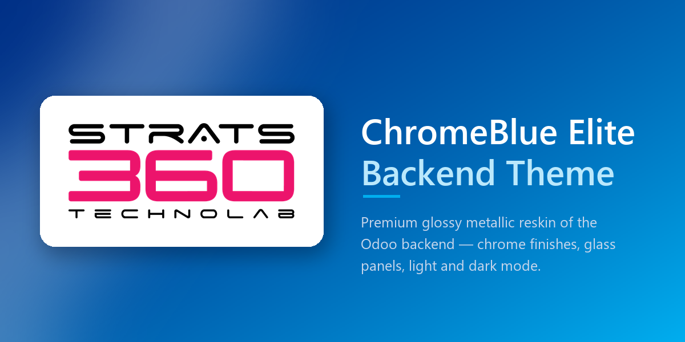

Persistent app sidebar, light/dark mode, a themed login / signup / reset-password flow, an optional public home page, a KPI landing dashboard, and an in-app Settings screen for recolouring everything — no SCSS edits, no asset rebuild.
Deep Indigo #3959b0
Ocean Blue #0284c7
Activate the app and the theme applies to the whole web client. Uninstall it and Odoo goes back to its stock look — no data is touched.
--cmt-* CSS custom
properties drives every colour, radius, shadow and font in the themefonts.googleapis.com request, nothing breaks offline or
under a strict CSP)--NavBar-*
custom properties, so core keeps control of layout and the theme only
supplies colourmd the rail steps aside for Odoo's own slide-in app
menudata-cmt-theme
attribute on <html> covers dialogs, popovers and
tooltips too — no server round-trip, no bundle rebuildrgb() /
rgba() pattern before it is saved and again before it
is rendered into the pagesudo() — so record rules apply exactly as they do in the
underlying list view. Can optionally open right after login| Odoo | 19.0 (Community or Enterprise) |
| Depends | web, base_setup |
| Optional | crm — only for the CRM pipeline card restyle; every
dashboard tile and every other feature degrades gracefully without
it |
The module adds a small settings model, a transient import wizard, and two opt-in controller hooks (login redirect, public home page) — no new stored business data. Its only persisted state is that transient wizard plus a handful of configuration rows and attachment images holding the chosen palette. It can be activated and removed at any time without migrating or losing data.
md) is left as-is.Apps → BlueNova Backend Theme → Uninstall. The backend returns to stock Odoo immediately. The module owns no business models or records, so nothing is left behind but the saved palette and images, which are removed with it.
Licensed LGPL-3. Bundled fonts (Inter, Poppins) are SIL Open Font License 1.1.